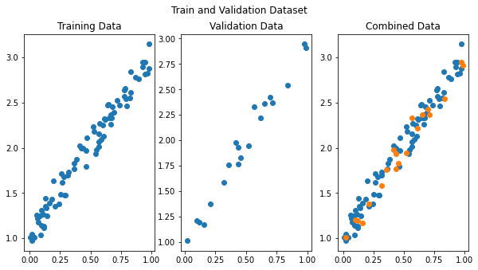

Code
python==3.7.14
sklearn==1.0.2
numpy==1.21.6
torch==1.12.1+cu113
matplotlib==3.2.2
In this notebook, we will train a linear regression model using PyTorch. Given below is the summary of the steps followed in this notebook.
Train and Validation datasets. Then convert them into mini-batches using PyTorch DataLoader classThis notebook is prepared with Google Colab.
python==3.7.14
sklearn==1.0.2
numpy==1.21.6
torch==1.12.1+cu113
matplotlib==3.2.2This notebook takes inspiration from the book “Deep Learning with PyTorch Step-by-Step” by “Daniel Voigt Godoy”. You can get the book from its website: pytorchstepbystep. In addition, the GitHub repository for this book has valuable notebooks and can be used independently: github.com/dvgodoy/PyTorchStepByStep. Parts of the code you see in this notebook are taken from chapter 2 notebook of the same book.
In this section, we will generate some data representing a line using equation “y = mx + b”. y = mx + b is the slope intercept form of writing the equation of a straight line. In the equation ‘b’ is the point where the line intersects the ‘y axis’ and ‘m’ denotes the slope of the line. If you want to read more about this equation then follow this post: cuemath.com/geometry/y-mx-b
import numpy as np
np.random.seed(0)
def generate_linear_data(n_data_points=100, true_m=1, true_b=1):
"""
Generate linear data using equation: y = mx + b + e
where 'e' is some random noise added
"""
x = np.random.rand(n_data_points, 1)
y = true_m * x + true_b + (.1 * np.random.randn(n_data_points, 1))
return x, y
# Let's generate 100 data points
n_data_points = 100
true_m = 2 # this is 'm' from slope-intercept line equation
true_b = 1 # this is 'b' from slope-intercept line equation
x, y = generate_linear_data(n_data_points, true_m, true_b)Let’s plot our generated data to see how it looks.
In this section, we will load our data in PyTorch helper classes Dataset and DataLoader. PyTorch documentation defines them as: [see basics/data_tutorial]
Code for processing data samples can get messy and hard to maintain; we ideally want our dataset code to be decoupled from our model training code for better readability and modularity. PyTorch provides two data primitives:
torch.utils.data.DataLoaderandtorch.utils.data.Datasetthat allow you to use pre-loaded datasets as well as your own data. Dataset stores the samples and their corresponding labels, and DataLoader wraps an iterable around the Dataset to enable easy access to the samples.
For this, we first need to convert NumPy data arrays to PyTorch tensors.
Now load the tensors into Dataset and DataLoader class. PyTorch Dataset is a helper class that converts data and labels into a list of tuples. DataLoader is another helper class to create batches from Dataset tuples. batch_size means the number of tuples we want in a single batch. We have used 16 here since our data is small. So each fetch from DataLoader will give us a list of 16 tuples.
##
# Load tensors into Dataset and DataLoader
from torch.utils.data import DataLoader, TensorDataset, random_split
dataset = TensorDataset(x_tensor, y_tensor)
# Performs the 80-20% train-valid split
ratio = .8
n_total = len(dataset)
n_train = int(n_total * ratio)
n_val = n_total - n_train
train_data, val_data = random_split(dataset, [n_train, n_val])
# Builds a loader of each set
# Use batch_size = 16 as data size is small
train_loader = DataLoader(
dataset=train_data,
batch_size=16,
shuffle=True
)
val_loader = DataLoader(dataset=val_data, batch_size=16)We have our DataLoaders ready for training and validation set. DataLoader objects are iterators, and let’s extract data from them to plot.
##
# Visualize training and validation data
# extrat train and validation sets from DataLoader as a list of tuples
train_data_list = list(iter(train_data))
val_data_list = list(iter(val_data))
# get data and labels (x, y) from extracted tuples list
x_train = [e[0].numpy() for e in train_data_list]
y_train = [e[1].numpy() for e in train_data_list]
x_val = [e[0].numpy() for e in val_data_list]
y_val = [e[1].numpy() for e in val_data_list]
# plot the data
figure, axes = plt.subplots(1, 3, figsize=(10,5))
figure.suptitle('Train and Validation Dataset')
axes[0].set_title('Training Data')
axes[0].scatter(x_train, y_train)
axes[1].set_title('Validation Data')
axes[1].scatter(x_val, y_val)
axes[2].set_title('Combined Data')
axes[2].scatter(x_train, y_train)
axes[2].scatter(x_val, y_val)
plt.show()
In this section, we will configure the linear model for training, define a loss function, and an optimizer to update the weights.
##
# Model configuration
import torch.nn as nn
import torch.optim as optim
torch.manual_seed(0)
# check gpu availability
device = 'cuda' if torch.cuda.is_available() else 'cpu'
# Sets learning rate
lr = 0.1
# Now we can create a model and send it at once to the device
model = nn.Linear(1, 1).to(device)
# Defines a SGD optimizer to update the parameters (now retrieved directly from the model)
optimizer = optim.SGD(model.parameters(), lr=lr)
# Defines a MSE loss function
loss_fn = nn.MSELoss(reduction='mean')We have initialized a model with default weights. Let’s view them. Note that “weight” denotes m and “bias” denotes b from our line equation. At this point they are very random but once we have trained our model they will be much closer to true_m and true_b which we used to generate the data.
In this section, we will define our pipelines for training and validation.
Note that during validation, we are only concerned about the loss, i.e., how well our model performs on the validation dataset. Therefore, we don’t use it to calculate the gradients.
Let’s configure our training pipeline steps in a helper function.
##
# Training pipeline - training step
# helper function for training
def make_train_step_fn(model, loss_fn, optimizer):
# Builds function that performs a step in the train loop
def perform_train_step_fn(x, y):
# Sets model to TRAIN mode
model.train()
# Step 1 - Computes our model's predicted output - forward pass
yhat = model(x)
# Step 2 - Computes the loss
loss = loss_fn(yhat, y)
# Step 3 - Computes gradients
loss.backward()
# Step 4 - Updates parameters using gradients and the learning rate
optimizer.step()
optimizer.zero_grad()
# Returns the loss
return loss.item()
# Returns the function that will be called inside the train loop
return perform_train_step_fn
# Creates the train_step function for our model, loss function and optimizer
train_step_fn = make_train_step_fn(model, loss_fn, optimizer)Let’s now configure our validation pipeline steps in a helper function.
##
# Validation pipeline - validation step.
# helper function for validation
def make_val_step_fn(model, loss_fn):
# Builds function that performs a step in the validation loop
def perform_val_step_fn(x, y):
# Sets model to EVAL mode
model.eval()
# Step 1 - Computes our model's predicted output - forward pass
yhat = model(x)
# Step 2 - Computes the loss
loss = loss_fn(yhat, y)
# There is no need to compute Steps 3 and 4, since we don't update parameters during evaluation
return loss.item()
return perform_val_step_fn
# Creates the val_step function for our model and loss function
val_step_fn = make_val_step_fn(model, loss_fn)Now let’s define the steps to process a single minibatch in a helper function. For a mini-batch processing, we want to
##
# Helper function for minibatch processing
def mini_batch(device, data_loader, step_fn):
mini_batch_losses = []
for x_batch, y_batch in data_loader:
x_batch = x_batch.to(device)
y_batch = y_batch.to(device)
mini_batch_loss = step_fn(x_batch, y_batch)
mini_batch_losses.append(mini_batch_loss)
loss = np.mean(mini_batch_losses)
return lossIn this section we will configure TensorBoard to track and visualize training and validation loss.
from torch.utils.tensorboard import SummaryWriter
import datetime
# Creates a Summary Writer to interface with TensorBoard
timestamp = datetime.datetime.utcnow().strftime('%Y-%m-%d-%H.%M.%S')
writer = SummaryWriter(f'runs/simple_linear_regression/{timestamp}')
# Fetches a single mini-batch so we can use add_graph
x_sample, y_sample = next(iter(train_loader))
writer.add_graph(model, x_sample.to(device))Now we are ready to execute our training pipeline. We will train our model for 200 epochs. An epoch is one cycle when the model has seen all the training data to compute loss, and we want our model to do it 200 times (200 epochs).
#collapse-output
# Execute pipeline with training and validation steps
n_epochs = 200
losses = []
val_losses = []
for epoch in range(n_epochs):
# training step
loss = mini_batch(device, train_loader, train_step_fn)
losses.append(loss)
# validation step
# no gradients in validation!
with torch.no_grad():
val_loss = mini_batch(device, val_loader, val_step_fn)
val_losses.append(val_loss)
# Records both losses for each epoch under the main tag "loss"
writer.add_scalars(main_tag='loss',
tag_scalar_dict={'training': loss, 'validation': val_loss},
global_step=epoch)
print(f"epoch: {epoch:3}, train loss: {loss:.5f}, valid loss: {val_loss:.5f}")
# Closes the writer
writer.close()epoch: 0, train loss: 1.17219, valid loss: 0.23260
epoch: 1, train loss: 0.20757, valid loss: 0.11046
epoch: 2, train loss: 0.13150, valid loss: 0.09627
epoch: 3, train loss: 0.11224, valid loss: 0.08610
epoch: 4, train loss: 0.09926, valid loss: 0.07644
epoch: 5, train loss: 0.08905, valid loss: 0.06739
epoch: 6, train loss: 0.07843, valid loss: 0.06012
epoch: 7, train loss: 0.06852, valid loss: 0.05478
epoch: 8, train loss: 0.06251, valid loss: 0.04898
epoch: 9, train loss: 0.05494, valid loss: 0.04451
epoch: 10, train loss: 0.04878, valid loss: 0.04031
epoch: 11, train loss: 0.04447, valid loss: 0.03616
epoch: 12, train loss: 0.03953, valid loss: 0.03173
epoch: 13, train loss: 0.03562, valid loss: 0.02867
epoch: 14, train loss: 0.03217, valid loss: 0.02642
epoch: 15, train loss: 0.02985, valid loss: 0.02395
epoch: 16, train loss: 0.02688, valid loss: 0.02295
epoch: 17, train loss: 0.02487, valid loss: 0.02103
epoch: 18, train loss: 0.02344, valid loss: 0.01901
epoch: 19, train loss: 0.02130, valid loss: 0.01751
epoch: 20, train loss: 0.01974, valid loss: 0.01663
epoch: 21, train loss: 0.01851, valid loss: 0.01555
epoch: 22, train loss: 0.01764, valid loss: 0.01392
epoch: 23, train loss: 0.01664, valid loss: 0.01410
epoch: 24, train loss: 0.01585, valid loss: 0.01355
epoch: 25, train loss: 0.01513, valid loss: 0.01283
epoch: 26, train loss: 0.01448, valid loss: 0.01217
epoch: 27, train loss: 0.01387, valid loss: 0.01166
epoch: 28, train loss: 0.01328, valid loss: 0.01125
epoch: 29, train loss: 0.01293, valid loss: 0.01146
epoch: 30, train loss: 0.01253, valid loss: 0.01059
epoch: 31, train loss: 0.01227, valid loss: 0.01087
epoch: 32, train loss: 0.01199, valid loss: 0.01042
epoch: 33, train loss: 0.01176, valid loss: 0.00927
epoch: 34, train loss: 0.01160, valid loss: 0.00912
epoch: 35, train loss: 0.01164, valid loss: 0.00951
epoch: 36, train loss: 0.01119, valid loss: 0.00945
epoch: 37, train loss: 0.01131, valid loss: 0.00946
epoch: 38, train loss: 0.01095, valid loss: 0.00918
epoch: 39, train loss: 0.01084, valid loss: 0.00888
epoch: 40, train loss: 0.01099, valid loss: 0.00943
epoch: 41, train loss: 0.01072, valid loss: 0.00863
epoch: 42, train loss: 0.01063, valid loss: 0.00899
epoch: 43, train loss: 0.01063, valid loss: 0.00843
epoch: 44, train loss: 0.01063, valid loss: 0.00809
epoch: 45, train loss: 0.01066, valid loss: 0.00779
epoch: 46, train loss: 0.01046, valid loss: 0.00831
epoch: 47, train loss: 0.01051, valid loss: 0.00780
epoch: 48, train loss: 0.01043, valid loss: 0.00790
epoch: 49, train loss: 0.01035, valid loss: 0.00813
epoch: 50, train loss: 0.01048, valid loss: 0.00796
epoch: 51, train loss: 0.01032, valid loss: 0.00859
epoch: 52, train loss: 0.01065, valid loss: 0.00835
epoch: 53, train loss: 0.01059, valid loss: 0.00790
epoch: 54, train loss: 0.01039, valid loss: 0.00782
epoch: 55, train loss: 0.01033, valid loss: 0.00821
epoch: 56, train loss: 0.01027, valid loss: 0.00832
epoch: 57, train loss: 0.01024, valid loss: 0.00856
epoch: 58, train loss: 0.01034, valid loss: 0.00853
epoch: 59, train loss: 0.01027, valid loss: 0.00846
epoch: 60, train loss: 0.01019, valid loss: 0.00783
epoch: 61, train loss: 0.01051, valid loss: 0.00831
epoch: 62, train loss: 0.01032, valid loss: 0.00790
epoch: 63, train loss: 0.01022, valid loss: 0.00815
epoch: 64, train loss: 0.01040, valid loss: 0.00749
epoch: 65, train loss: 0.01020, valid loss: 0.00768
epoch: 66, train loss: 0.01025, valid loss: 0.00783
epoch: 67, train loss: 0.01040, valid loss: 0.00861
epoch: 68, train loss: 0.01025, valid loss: 0.00764
epoch: 69, train loss: 0.01018, valid loss: 0.00818
epoch: 70, train loss: 0.01030, valid loss: 0.00771
epoch: 71, train loss: 0.01033, valid loss: 0.00809
epoch: 72, train loss: 0.01034, valid loss: 0.00747
epoch: 73, train loss: 0.01032, valid loss: 0.00855
epoch: 74, train loss: 0.01023, valid loss: 0.00852
epoch: 75, train loss: 0.01019, valid loss: 0.00785
epoch: 76, train loss: 0.01027, valid loss: 0.00751
epoch: 77, train loss: 0.01027, valid loss: 0.00742
epoch: 78, train loss: 0.01031, valid loss: 0.00723
epoch: 79, train loss: 0.01021, valid loss: 0.00816
epoch: 80, train loss: 0.01023, valid loss: 0.00829
epoch: 81, train loss: 0.01028, valid loss: 0.00803
epoch: 82, train loss: 0.01040, valid loss: 0.00823
epoch: 83, train loss: 0.01024, valid loss: 0.00815
epoch: 84, train loss: 0.01020, valid loss: 0.00818
epoch: 85, train loss: 0.01024, valid loss: 0.00835
epoch: 86, train loss: 0.01029, valid loss: 0.00797
epoch: 87, train loss: 0.01021, valid loss: 0.00776
epoch: 88, train loss: 0.01025, valid loss: 0.00859
epoch: 89, train loss: 0.01021, valid loss: 0.00840
epoch: 90, train loss: 0.01026, valid loss: 0.00804
epoch: 91, train loss: 0.01020, valid loss: 0.00803
epoch: 92, train loss: 0.01031, valid loss: 0.00883
epoch: 93, train loss: 0.01028, valid loss: 0.00808
epoch: 94, train loss: 0.01034, valid loss: 0.00778
epoch: 95, train loss: 0.01023, valid loss: 0.00797
epoch: 96, train loss: 0.01019, valid loss: 0.00826
epoch: 97, train loss: 0.01033, valid loss: 0.00747
epoch: 98, train loss: 0.01022, valid loss: 0.00785
epoch: 99, train loss: 0.01021, valid loss: 0.00778
epoch: 100, train loss: 0.01025, valid loss: 0.00782
epoch: 101, train loss: 0.01022, valid loss: 0.00807
epoch: 102, train loss: 0.01032, valid loss: 0.00796
epoch: 103, train loss: 0.01017, valid loss: 0.00770
epoch: 104, train loss: 0.01019, valid loss: 0.00778
epoch: 105, train loss: 0.01017, valid loss: 0.00776
epoch: 106, train loss: 0.01018, valid loss: 0.00766
epoch: 107, train loss: 0.01027, valid loss: 0.00823
epoch: 108, train loss: 0.01021, valid loss: 0.00783
epoch: 109, train loss: 0.01037, valid loss: 0.00753
epoch: 110, train loss: 0.01017, valid loss: 0.00747
epoch: 111, train loss: 0.01045, valid loss: 0.00805
epoch: 112, train loss: 0.01020, valid loss: 0.00815
epoch: 113, train loss: 0.01027, valid loss: 0.00811
epoch: 114, train loss: 0.01016, valid loss: 0.00790
epoch: 115, train loss: 0.01016, valid loss: 0.00776
epoch: 116, train loss: 0.01018, valid loss: 0.00758
epoch: 117, train loss: 0.01020, valid loss: 0.00743
epoch: 118, train loss: 0.01021, valid loss: 0.00791
epoch: 119, train loss: 0.01032, valid loss: 0.00731
epoch: 120, train loss: 0.01019, valid loss: 0.00788
epoch: 121, train loss: 0.01025, valid loss: 0.00819
epoch: 122, train loss: 0.01039, valid loss: 0.00786
epoch: 123, train loss: 0.01032, valid loss: 0.00791
epoch: 124, train loss: 0.01026, valid loss: 0.00745
epoch: 125, train loss: 0.01021, valid loss: 0.00786
epoch: 126, train loss: 0.01026, valid loss: 0.00747
epoch: 127, train loss: 0.01028, valid loss: 0.00794
epoch: 128, train loss: 0.01037, valid loss: 0.00768
epoch: 129, train loss: 0.01029, valid loss: 0.00775
epoch: 130, train loss: 0.01027, valid loss: 0.00805
epoch: 131, train loss: 0.01019, valid loss: 0.00828
epoch: 132, train loss: 0.01024, valid loss: 0.00804
epoch: 133, train loss: 0.01033, valid loss: 0.00801
epoch: 134, train loss: 0.01022, valid loss: 0.00773
epoch: 135, train loss: 0.01034, valid loss: 0.00868
epoch: 136, train loss: 0.01031, valid loss: 0.00792
epoch: 137, train loss: 0.01045, valid loss: 0.00862
epoch: 138, train loss: 0.01031, valid loss: 0.00853
epoch: 139, train loss: 0.01034, valid loss: 0.00832
epoch: 140, train loss: 0.01022, valid loss: 0.00793
epoch: 141, train loss: 0.01019, valid loss: 0.00754
epoch: 142, train loss: 0.01017, valid loss: 0.00781
epoch: 143, train loss: 0.01025, valid loss: 0.00809
epoch: 144, train loss: 0.01022, valid loss: 0.00810
epoch: 145, train loss: 0.01020, valid loss: 0.00822
epoch: 146, train loss: 0.01016, valid loss: 0.00778
epoch: 147, train loss: 0.01042, valid loss: 0.00790
epoch: 148, train loss: 0.01027, valid loss: 0.00781
epoch: 149, train loss: 0.01032, valid loss: 0.00742
epoch: 150, train loss: 0.01018, valid loss: 0.00779
epoch: 151, train loss: 0.01032, valid loss: 0.00830
epoch: 152, train loss: 0.01028, valid loss: 0.00748
epoch: 153, train loss: 0.01045, valid loss: 0.00763
epoch: 154, train loss: 0.01025, valid loss: 0.00754
epoch: 155, train loss: 0.01020, valid loss: 0.00739
epoch: 156, train loss: 0.01022, valid loss: 0.00768
epoch: 157, train loss: 0.01021, valid loss: 0.00727
epoch: 158, train loss: 0.01021, valid loss: 0.00834
epoch: 159, train loss: 0.01026, valid loss: 0.00809
epoch: 160, train loss: 0.01027, valid loss: 0.00814
epoch: 161, train loss: 0.01041, valid loss: 0.00773
epoch: 162, train loss: 0.01028, valid loss: 0.00737
epoch: 163, train loss: 0.01017, valid loss: 0.00785
epoch: 164, train loss: 0.01015, valid loss: 0.00795
epoch: 165, train loss: 0.01021, valid loss: 0.00808
epoch: 166, train loss: 0.01023, valid loss: 0.00769
epoch: 167, train loss: 0.01027, valid loss: 0.00792
epoch: 168, train loss: 0.01031, valid loss: 0.00753
epoch: 169, train loss: 0.01026, valid loss: 0.00753
epoch: 170, train loss: 0.01020, valid loss: 0.00774
epoch: 171, train loss: 0.01027, valid loss: 0.00768
epoch: 172, train loss: 0.01025, valid loss: 0.00806
epoch: 173, train loss: 0.01019, valid loss: 0.00826
epoch: 174, train loss: 0.01034, valid loss: 0.00841
epoch: 175, train loss: 0.01025, valid loss: 0.00751
epoch: 176, train loss: 0.01025, valid loss: 0.00740
epoch: 177, train loss: 0.01026, valid loss: 0.00800
epoch: 178, train loss: 0.01045, valid loss: 0.00810
epoch: 179, train loss: 0.01028, valid loss: 0.00799
epoch: 180, train loss: 0.01039, valid loss: 0.00827
epoch: 181, train loss: 0.01020, valid loss: 0.00768
epoch: 182, train loss: 0.01031, valid loss: 0.00794
epoch: 183, train loss: 0.01027, valid loss: 0.00806
epoch: 184, train loss: 0.01019, valid loss: 0.00821
epoch: 185, train loss: 0.01035, valid loss: 0.00847
epoch: 186, train loss: 0.01026, valid loss: 0.00766
epoch: 187, train loss: 0.01032, valid loss: 0.00747
epoch: 188, train loss: 0.01025, valid loss: 0.00788
epoch: 189, train loss: 0.01025, valid loss: 0.00774
epoch: 190, train loss: 0.01027, valid loss: 0.00853
epoch: 191, train loss: 0.01024, valid loss: 0.00778
epoch: 192, train loss: 0.01026, valid loss: 0.00717
epoch: 193, train loss: 0.01019, valid loss: 0.00781
epoch: 194, train loss: 0.01017, valid loss: 0.00754
epoch: 195, train loss: 0.01024, valid loss: 0.00798
epoch: 196, train loss: 0.01019, valid loss: 0.00760
epoch: 197, train loss: 0.01025, valid loss: 0.00762
epoch: 198, train loss: 0.01025, valid loss: 0.00773
epoch: 199, train loss: 0.01018, valid loss: 0.00771That is it! We have trained our linear model and can view its learned weight and bias. Note that after training, they are much closer to true_m and true_b, which we used to generate the data. We can say that our model has learned the inherent pattern from within the data.
Let’s view how our training and validation loss has progressed throughout the training using TensorBoard.

Let’s also make a quick comparison with sklearn LinearRegression model to see how our Neural Net model stands against it.
Our Sklearn model is ready so let’s also get its weight and bias. For sklearn LinearRegressor